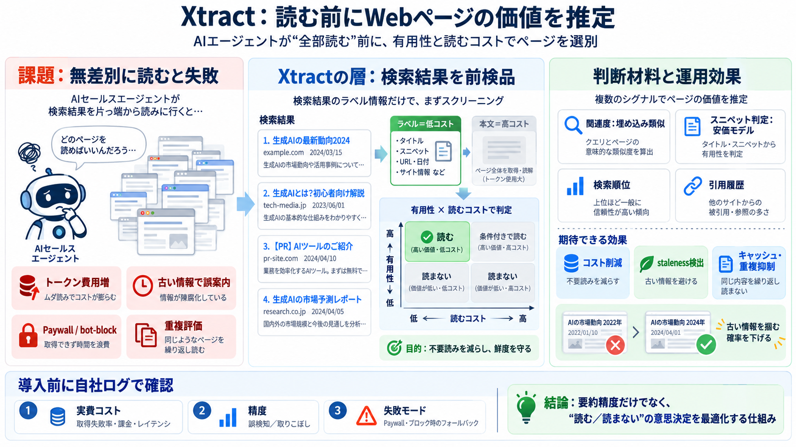

AI Agent Statistics 2026: 100+ Stats on Market and Adoption
The market reached an estimated $7.63 to $8.29 billion in 2025, depending on the analyst, and is projected to reach roug…

AIエージェントとWeb検索の間で、各ページの「有用性」と「読むコスト（トークン負荷）」を事前推定し、読むページを絞り込みます。
狙い：古い情報（stale facts）による誤案内を減らしつつ、不要ページを読むためのトークン浪費を抑えます。
検索結果は複数ページに散らばり、エージェントが全部読むとトークン費用が増えます。さらに古いニュースが混ざると提案の質が落ち、失注やブランド毀損につながります。
Xtractは、エージェントがページを読んでから判断するのではなく、検索結果の段階で「買う価値のあるページ」だけを選びます。
検索結果の“棚”から、飲む前にラベル（タイトル・スニペット）で「役に立つか」「読む価値があるか」を見極めます（試飲＝本文読みに相当する高コストを回避）。
Xtractは各ページを、(1)有用性（usefulness）と、(2)読むコスト（token load）で見積もります。読み取りを含むトータルコストを抑える方向で選別します。
README上の報告では、ナイーブに検索結果10ページを全読みに比べ、Xtractは“スコアリングにもトークンを使う”にも関わらず、コストシミュレーションで大幅削減を示しています。
Xtractは「後から出たページが、同じ文脈のニュースを置き換える／覆す」パターンを検出します。営業では鮮度が誤案内の致命傷になり得るため、要約精度だけでは足りない領域を狙います。
有用性スコアの使い回し、重複結果の価値低下、そして同一答えを買わない判断が、読み取りの無駄を減らします。
READMEでは、有用性スコアを複数信号で重み付き合成するとされています：クエリとページの埋め込み類似、安価モデルによるスニペット判定、検索順位、過去に引用した頻度など。
README上の課題として、ページ価格はシミュレーションであり、実料金・ネットワーク条件まで完全再現できるとは限りません。さらに評価タスク数も限定的です。
Xtractは“答えを上手に書く”ための改良ではなく、“読む／読まない”という前工程の意思決定を検索結果に埋め込む設計です（現場の失敗パターンに直撃）。
Xtractは「読む前に価値判断」を実装し、鮮度と意思決定を中心に据える点で筋が良いです。ただし実費コスト・誤検知/取りこぼし・Paywall/ブロック時の失敗モードは、自社ログでの再現評価が必須です。
The market reached an estimated $7.63 to $8.29 billion in 2025, depending on the analyst, and is projected to reach roug…
The global AI agents market size was valued at USD 7.6 billion in 2025 and is projected to grow from USD 10.9 billion in…
The market is exploding - AI agents represent a $7.38 billion market in 2025, projected to reach $47.1 billion by 2030 a…
## Market Size and Forecast: 2024 Market Size: USD 5.26 Billion 2025 Projected Market Size: USD 7.84 Billion 2030 Fo…
### 6. Alternative projections estimate $182.97 billion by 2033 Grand View Research projects the market will reach $182…